Chapter 1 · Part 1 — By Moonlight
“Jack!” a voice.
Jack opened his eyes. He saw a in the .
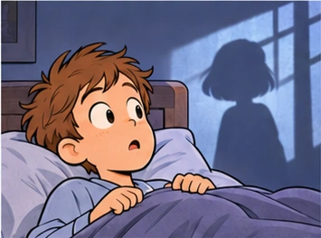
“Wake up. Get dressed.” It was his sister, Annie.
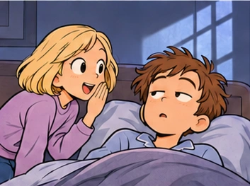
Jack turned on his lamp. He his eyes.
Annie was standing beside his bed. She wore jeans and a sweatshirt.
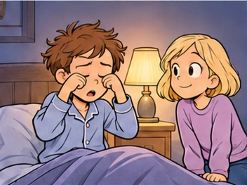
“Let’s go to the tree house,” she said.
“What time is it?” asked Jack. He put on his glasses.
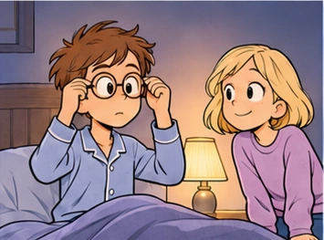
“Don’t look at your clock,” said Annie.
Jack looked at his clock. “Oh, man,” he said. “It’s midnight. It’s too dark.”
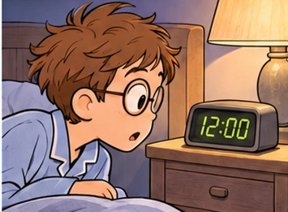
“No, it isn’t. The moon makes it bright enough to see,” said Annie.
“Wait till morning,” said Jack.
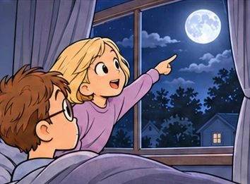
“No—now,” said Annie. “We have to find the fourth M thing. I have a feeling that the full moon might help us.”
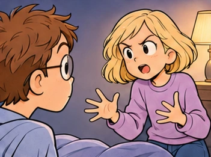
“That’s nuts,” said Jack. “I want to sleep.”
“You can sleep when we come back home,” said Annie. “No time will have passed.”
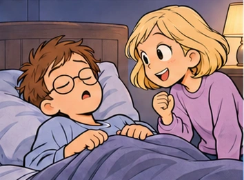
Jack . “Oh, brother,” he said.
But he got out of bed.
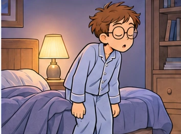
“Yay!” Annie. “Meet you at the back door.” She out of Jack’s room.
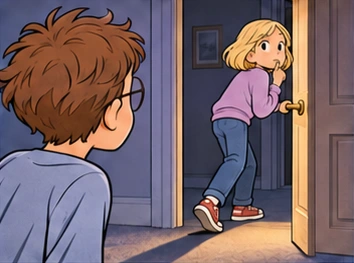
Jack yawned. He pulled on his jeans and sneakers and a sweatshirt. He put his notebook and pencil into his backpack. Then he down the stairs.
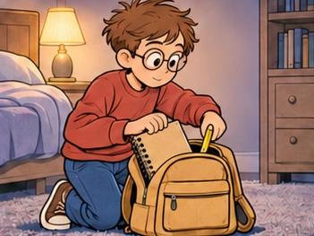
Annie opened the back door. Quietly, they stepped outside.
“Wait—” said Jack. “We need a flashlight.”
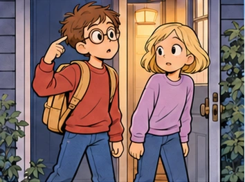
“No, we don’t. I told you—the moon will light our way,” said Annie. And she took off.
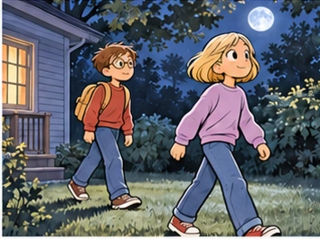
Jack , then followed her.
Annie was right, thought Jack. The moon was so bright that he could see his . Everything seemed washed with silver.
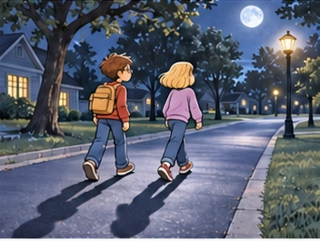
Soon they left their street. Annie led the way into the Frog Creek woods. It was much darker under the shadows of the trees.
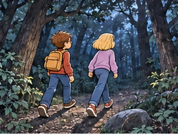
Jack looked up, searching for the tree house.
“There!” said Annie.
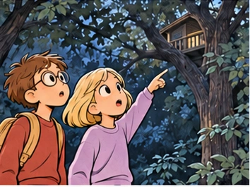
The magic tree house was shining in the .
Annie the rope ladder and started climbing up.
“Careful—go slowly,” said Jack.
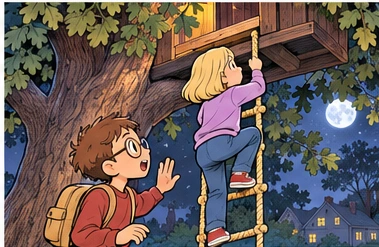
He followed her up the ladder and into the tree house.
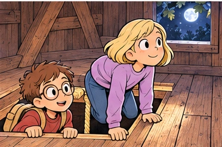